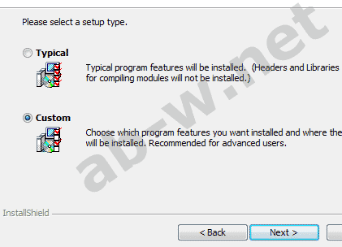

Создать сайт в интернете? HTML текст. CSS HTML верстка
Новые PHP уроки
PHP в действии
Установка локального сервера
Установка сервера Apache, MySQL и PHP интерпретатора
или устанавливаем связку серверов самостоятельно
Проверено на Windows Vista SP1, Vista Ultimate, Windows 7
Ваши действия:
Внимание! MySQL можно не скачивать – для изучения основ PHP он не нужен!
Со временем дистрибутивы будут обновляться. Не знаю будет ли у меня время все перепроверять.
Установка и настройка локального сервера Apache
Запускаем инсталлятор Apache:
Жмем Next.
Принимаем лицензионное соглашение, жмем Next:
Next:
Вводим информацию о нашем сервере. Так как сервер у нас локальный, прописываем стандартный для этого случая набор данных. В двух первых полях прописываем localhost, а в третьем — admin@localhost:
Жмем Next.
Выбираем Custom:
Жмем Next.
В следующем окне жмем кнопку Change..., чтобы изменить путь установки:
Далее указываем папку в которой у нас лежит дистрибутив Apache:
Жмем OК, затем Next.
Инсталлируем и в конце жмем Finish:
Посмотрите на панель инструментов рабочего стола в правом нижнем углу (эта область в народе называется треем (system tray)). Там должен отобразиться значок установленного сервера Apache – розовое перо и белый круг, с зеленым треугольником в центре.
Проверим работает ли сервер. Открываем браузер, указываем адрес: http://127.0.0.1/ или http://localhost/, жмем Enter. Страница с сообщением It works! говорит о том, что мы были внимательны и все сделали правильно.
Установка и настройка PHP интерпретатора
Запускаем инсталлятор php, жмем Next:
Cоглашаемся с лицензией, Next:
Жмем Browse...:
Указываем путь установки:
ОK, Next.
Выбираем тип модуля установленного сервера Apache:
Жмем Next.
Выбираем конфигурационную директорию установленного сервера Apache:
ОK, Next.
Далее в Extencions выбираем Entire feature will be installed..:
Жмем Next.
Инсталлируем:
Жмем Finish:
Установка локального сервера баз данных MySQL
MySQL можно пропустить – для изучения основ PHP вам он не нужен!
Запускаем инсталлятор MySQL:
Жмем Next.
Принимаем лицензионное соглашение, жмем Next:
В следующем окне выбираем Custom:
Дальше Browse..., чтобы изменить путь установки:
Указываем папку:
Жмем OК, затем Next.
Инсталлируем:
Next:
В следующем окне жмем снова Next, в конце Finish и начинаем конфигурирование:
Если процесс конфигурирования не начался автоматически, запустите файл
MySQLInstanceConfig, который находится в папке bin, по адресу C:\server\MySQL\bin\.
Далее жмем Next:
Выбираем Standart Configuration, жмем Next:
Снова Next:
В следующем окне указываем корневой пароль, который нужно запомнить (root password), например, 55555:
Жмем Next, затем Execute.
Если все сделано верно, программа выдаст соответствующий отчет:
Finish.
Если последний пункт не прошел, забейте на него, на данном этапе это не столь важно.
Так как мы будем использовать сервер Apache в связке с PHP, нам необходимо настроить файл конфигурации httpd.conf, который находится на вашем локальном компьютере в директории C:\server\apache\conf\.
Действуйте в следующем порядке:
Сохраните измененный файл там же.
Мой файл httpd.conf
Сохраните измененный файл там же.
Мой файл php.ini
Завершив редактирование файлов, создайте папку www в папке server и папку cgi-bin в папке www. Перезапустите компьютер. В результате в трее, в статусе сервера появился зеленый треугольник вместо красного квадрата, если нет и выведено окно с предупреждением об ошибке, значит изменение файла httpd.conf было неточным и вам прийдется внимательно все проверить, наклоны слэшей, кавычки и так далее.
www — корневая директория (root directory) локального сервера, именно здесь следует сохранять все документы (папки, страницы, изображения, скрипты и другие файлы) вашего сайта.
Создайте новый файл в редакторе (Notepad2 или Notepad+) и напишите код:
|
<?php |
Сохраните файл в директории C:\server\www\ как index.php. В браузере наберите http://127.0.0.1 или http://localhost/ ⇒ должна быть показана таблица:
У меня все получилось! Если у вас есть какие-либо вопросы или пожелания, пишите в блог.
Мы имеем локальный сервер в связке с интерпретатором и теперь можно изучать PHP.
Тестируем соединение с сервером баз данных MySQL
Небольшой скрипт:
|
<?php |
Сохраняем скрипт в папке C:\server\www\ как mysql.php и набераем в браузере http://localhost/mysql.php ⇒ будет показан серийный номер MySQL сервера:
|
5.5.12 |
Установив вышеперечисленные компоненты, мы получили полноценный локальный web-сервер и всё необходимое для организации дальнейшей работы.
Были использованы материалы с сайтов: dev.mysql.com | php.net | php-myadmin.ru